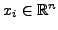
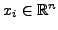

This paper is concerned with Krylov methods for solving linear random algebraic equations of the form
Our focus is on the particular case when and  are
provided in a polynomial chaos (PC) basis, i.e.,
and
, where
are
multivariate Hermite, Legendre or general monomial basis functions that
are constructed to be orthonormal with respect to
(
). Parametrized linear random algebraic
equations of this form are routinely encountered in numerical solution of
stochastic (or randomly parametrized) partial differential equations
(SPDEs) [1-3]. A well known method for solving this class of problems is
the Ghanem-Spanos projection scheme [1], wherein the solution is
approximated as
, where
 are undetermined
coefficient vectors. The
undetermined coefficient vectors are estimated via Galerkin projection as follows:
are
provided in a polynomial chaos (PC) basis, i.e.,
and
, where
are
multivariate Hermite, Legendre or general monomial basis functions that
are constructed to be orthonormal with respect to
(
). Parametrized linear random algebraic
equations of this form are routinely encountered in numerical solution of
stochastic (or randomly parametrized) partial differential equations
(SPDEs) [1-3]. A well known method for solving this class of problems is
the Ghanem-Spanos projection scheme [1], wherein the solution is
approximated as
, where
 are undetermined
coefficient vectors. The
undetermined coefficient vectors are estimated via Galerkin projection as follows:
For the case when is symmetric positive definite (SPD), it can be easily shown that the above conditions are equivalent to directly minimizing the norm error , where is the exact solution of (1). In order to study which error norm is minimized for the case when is nonsymmetric, it is instructive to write the residual error corresponding to the approximation in the form
where
In the present work, we propose a numerically stable Krylov method based
on the GMRES algorithm [4] (which we refer to as the sGMRES algorithm)
for minimizing the stochastic residual error norm corresponding to the
 term approximation
.The sGMRES algorithm combines the
ideas developed in [3] in the context of conjugate gradient methods with
the standard GMRES algorithm for deterministic nonsymmetric linear
algebraic equations. The key idea is to iteratively minimize the residual
error norm over a Krylov subspace whose basis are constructed using the
Arnoldi procedure. We present a general derivation of the sGMRES
algorithm, while pointing out the similarities and differences with the
deterministic GMRES algorithm. We also provide a theoretical convergence
analysis of the sGMRES algorithm and show how restarting procedures in
conjunction with function decomposition schemes can be employed to
significantly reduce the computational cost and memory requirements for
high-dimensional problems (
).
term approximation
.The sGMRES algorithm combines the
ideas developed in [3] in the context of conjugate gradient methods with
the standard GMRES algorithm for deterministic nonsymmetric linear
algebraic equations. The key idea is to iteratively minimize the residual
error norm over a Krylov subspace whose basis are constructed using the
Arnoldi procedure. We present a general derivation of the sGMRES
algorithm, while pointing out the similarities and differences with the
deterministic GMRES algorithm. We also provide a theoretical convergence
analysis of the sGMRES algorithm and show how restarting procedures in
conjunction with function decomposition schemes can be employed to
significantly reduce the computational cost and memory requirements for
high-dimensional problems (
).
We present numerical results for two different test-cases. As a first validation, we consider a structured random perturbation of a fixed nonsymmetric matrix. We then consider a more realistic situation where the linear equations arise from semi-discretization of the stochastic convection-diffusion equation. Detailed comparison studies are made with the standard Ghanem-Spanos method to illustrate the advantages of the sGMRES algorithm.
Acknowledgements: This research is supported by the United Kingdom Engineering and Physical Sciences Research Council (EPSRC) Grant No. EP/F006802/1.
[1] R. Ghanem and P. Spanos, ``Stochastic finite elements: A spectral approach'', Springer Verlag, New York, 1991.
[2] C. E. Powell and H. C. Elman, ``Block-diagonal preconditioning for spectral stochastic finite-element systems'', IMA Journal of Numerical Analysis 2009 29(2):350-375.
[3] P. Hakansson, P. B. Nair, ``Conjugate gradient methods for parametrized linear random algebraic equations'', submitted.
[4] Y. Saad, M. H. Schultz, ``GMRES: a generalized minimal residual algorithm for solving nonsymmetric linear systems'', SIAM Journal on Scientific and Statistical Computing, Vol. 7, Issue 3 (1986), 856-869.